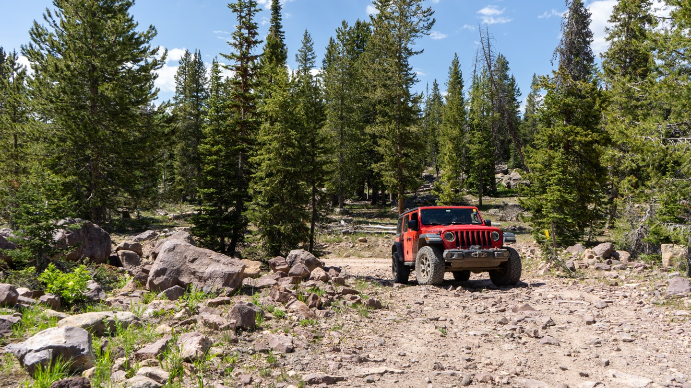
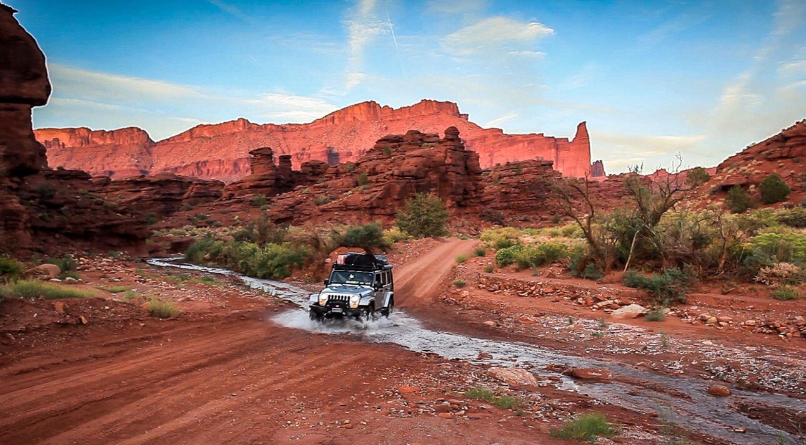
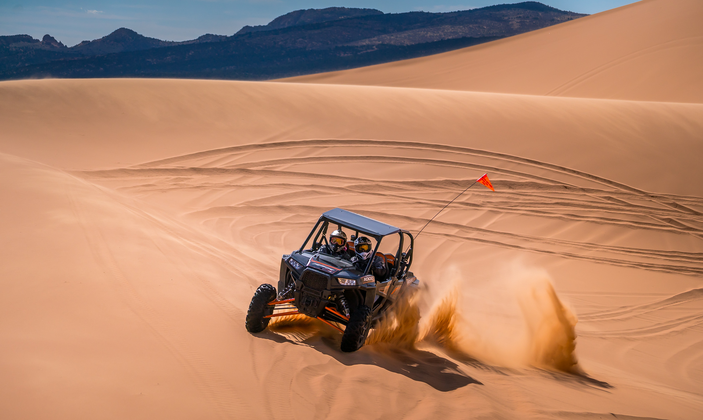

Explore Utah's Wilderness
Do you feel the need for exploration or want to get more out of the outdoors? Offroading is a great way to see more of the wilderness and the best part about Utah is you get the best of all worlds. You can see forests, deserts, and mountains galore! This website is here to help you find the best trails that range from beginner to hardcore and help you find the perfect campsite for that weekend getaway. We'll also tell you about the best gear and accessories to take with you on your adventure.
-
Explore the Uintah Forests and find amazing views and comfy campsites
 -
Brave Moab Rim Trail and take in the red rock formations
 -
Tear it up at Coral Pink Sand Dunes or Sand Hollow State Park

Contact Information
Utah Offroad Adventures
1645 West 500 South
Layton, UT 84041
801-888-3558
Utah Offroad Adventures
1645 West 500 South
Layton, UT 84041
801-888-3558